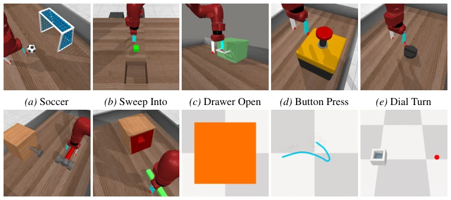
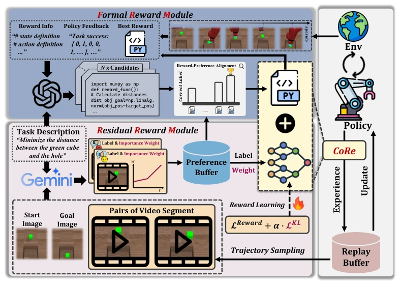
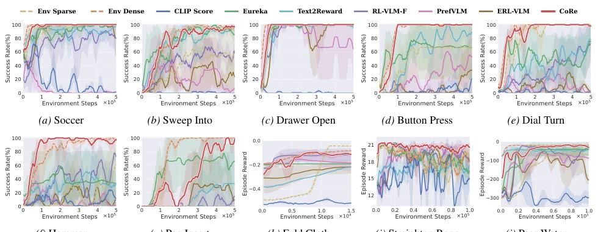
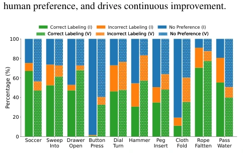
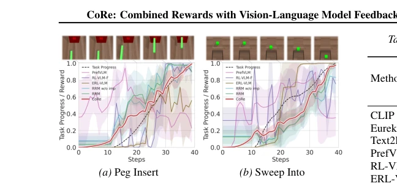
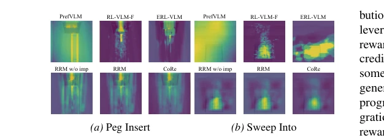
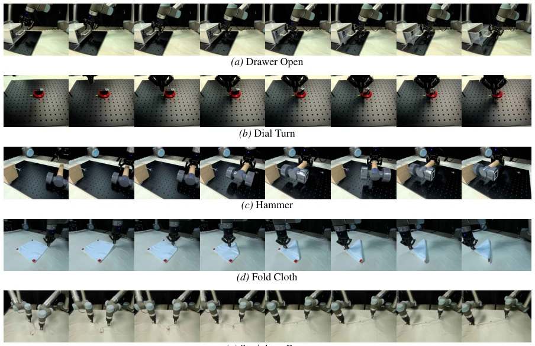
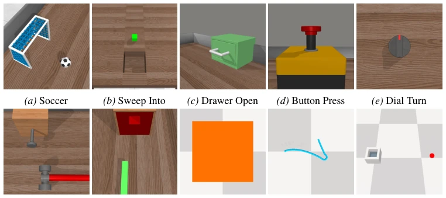
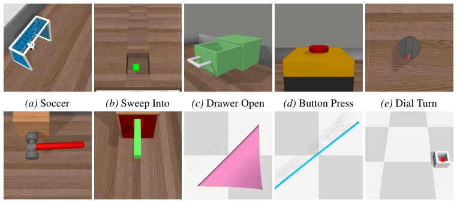
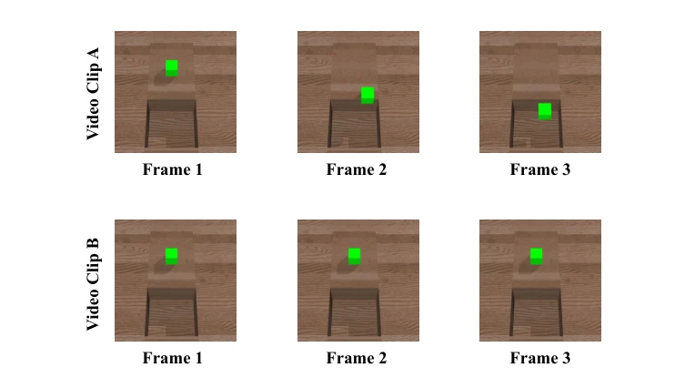

CoRe attempts to 'cheat' in RL reward design using VLMs, decomposing rewards into 'explicit' Formal and 'implicit' Residual components. This approach is quite clever, as relying solely on LLMs to write code tends to overfit task completion, leading to foolish behaviors like 'using the hammer handle to strike a nail' (Hammer task). However, the cost of relying on API calls is undeniable; while $0.37 per training appears cheap, scaling it up incurs real expenses. The experiments are indeed stable, but treating the VLM as a judge carries risk; if the VLM misjudges, the policy may follow suit, yet this risk is not elaborated. Overall, this represents an effective integration in RL reward engineering, but fails to resolve the fundamental 'black box' issue, and relies too heavily on VLM reasoning capabilities, raising doubts about generalization.
研究动机Motivation
强化学习里奖励函数设计是老大难。手工设计费时且易导致次优策略或奖励黑客行为（Amodei et al., 2016）。基于偏好的 RL（PbRL）虽能对齐人类意图，但需要大量人类标签，效率低且成本高（Lee et al., 2021a）。现有利用 LLM/VLM 生成奖励的方法，要么依赖完整环境代码，要么奖励粗糙无法捕捉细粒度偏好（Wang et al., 2024）。CoRe 旨在结合结构化知识与数据驱动，解决反馈效率与对齐稳定性的矛盾，减少人工干预，特别是在复杂操作任务中。
Reward function design in reinforcement learning remains a persistent challenge. Manual design is time-consuming and prone to yielding suboptimal policies or reward hacking behaviors (Amodei et al., 2016). While Preference-based RL (PbRL) can align with human intent, it requires extensive human labels, leading to low efficiency and high costs (Lee et al., 2021a). Existing methods leveraging LLMs/VLMs to generate rewards either depend on complete environment code or produce coarse rewards incapable of capturing fine-grained preferences (Wang et al., 2024). CoRe aims to integrate structured knowledge with data-driven methods to address the trade-off between feedback efficiency and alignment stability, minimizing manual intervention, particularly in complex manipulation tasks.

Figure 7. Ten simulation tasks. The first seven images depict rigid and articulated object manipulation tasks from MetaWorld. The next three images illustrate deformable object manipulation tasks from SoftGym.
The CoRe framework comprises two modules. FRM utilizes LLMs to generate code rewards, moving beyond filtering solely on task completion to instead employ 'reward-preference alignment' iterative optimization, ensuring rewards align with human intent and avoiding over-optimization of single metrics. RRM utilizes VLMs to analyze video-level preferences, generating preference labels while also evaluating the importance of each frame's state, constraining the reward distribution to match the importance prior via KL divergence to address sparse feedback issues. The final total reward is the weighted sum of both. This combination preserves the clarity of code rewards while capturing fine-grained dynamics difficult to encode through video feedback, achieving preference alignment without human intervention and enhancing the stability and efficiency of policy learning.

Figure 1. Illustration of CoRe. CoRe decomposes the RL reward into a formal reward (FRM) and a residual reward (RRM). FRM leverages LLMs together with VLM-based preferences to iteratively generate and refine code-based rewards, facilitating effective RRM exploration, high-quality preference labeling, and stable training. RRM incorporates video-level preferences and state-importance from VLMs to complement FRM and ensure alignment with human intent. By integrating these complementary signals, CoRe enables feedback-efficient and preference-aligned policy learning without human involvement.
Evaluated on 10 simulation tasks across MetaWorld and SoftGym, plus 5 real-world UR5 tasks. Baselines include Eureka, PrefVLM, among others. CoRe achieves an average success rate of 99%, far surpassing CLIP Score, and avoids reward hacking behaviors on complex tasks such as Hammer. Sample efficiency improved significantly, with label requirements reduced by 3-40 times. Ablation studies demonstrate FRM is suitable for rigid bodies while RRM is suitable for soft bodies, with the two being complementary. Real-world transfer requires no fine-tuning and exhibits strong robustness. Learning curves indicate faster and more stable convergence, validating the method's effectiveness, particularly showing excellent performance in soft manipulation tasks.

Figure 3. Learning curves on ten robotic manipulation tasks as measured by success rate and episode reward. The solid line and shaded regions represent the mean and standard deviation, respectively. Each task runs three times using different seeds.

Figure 4. Measure the accuracy of VLMs in terms of image-level preference (I) and video-level preference (V) with task comple- tion. Correct Labeling indicates that VLMs favor the image or video with higher task completion. Incorrect Labeling denotes that VLMs fail to identify the option with higher task completion. No Preference indicates that VLMs cannot provide a preference.

Figure 5. The alignment of learned rewards and task progress on the expert trajectory. The learned rewards are averaged over three trained reward models with different seeds, and the shaded region represents the standard deviation.

Figure 6. We visualize the learned rewards corresponding to ob- jects at different positions as a 2D heat map. Brighter indicates a higher reward. The rewards are averaged over three trained reward models with different seeds.

Figure 8. Five real-world tasks. Execution sequence of policy on the real-world UR5 robotic arm.
其他图片Other Figures

Figure 10. The start images for the 10 simulation tasks.

Figure 11. The goal images for the 10 simulation tasks.

Figure 12. An example of a video-level preference label for Sweep Into.